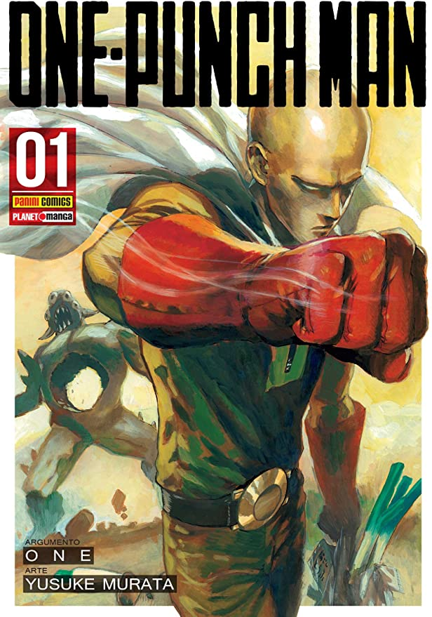

Fullmetal Alchemist, obra máxima de Hiromu Arakawa, está de volta em uma Edição Especial de Colecionador! Edward e Alphonse Elric são jovens alquimistas que estão em busca da lendária Pedra Filosofal para recuperarem os seus corpos. Ouvindo rumores sobre ela, os irmãos Elric vão para uma cidade profundamente devota ao seu Deus e àquele que divulga sua fé, o Pai Cornello. Este religioso tem praticado atos milagrosos que mais se parecem com transmutações alquímicas, e investigando a origem de tais milagres eles conhecem Rose, uma garota que busca na religião a esperança de rever seu amado. A jornada dos irmãos Elric que desafiará os limites da fé e da ciência começa aqui!
Detalhes do produto
Autor:
Hiromu Arakawa
Número de páginas:
192 páginas
Idioma:
Português
Editora:
Editora JBC
Data publicação:
15/04/2021
Dimensões:
20.4 x 12.8 x 0.8 cm
Preço:
R$ 100,00 (capa comum)

One-Punch Man, Vol. 1: Volume 1
Com apenas um soco!! Saitama se tornou forte a ponto de derrotar criaturas monstruosas com um único soco. E o que não falta são monstros para serem derrotados na Cidade Z, onde eles surgem a todo momento, seja das profundezas da Terra ou dos confins do espaço, como resultado de uma experiência maluca ou de uma mutação genética. Mas, para Saitama, essas criaturas não são um problema... O problema é justamente que ele os derrota com um golpe só! Seu sonho de se tornar um super-herói se transformou numa vida de tédio quando ele ficou forte demais. O objetivo agora é encontrar a emoção de um verdadeiro desafio! A lenda do mais poderoso e pacato herói começa aqui!! Acompanhe o dia a dia das incríveis batalhas concebidas pela mais talentosa dupla dos mangás: ONE, a mente por trás da história, e Yusuke Murata, o mestre das ilustrações!